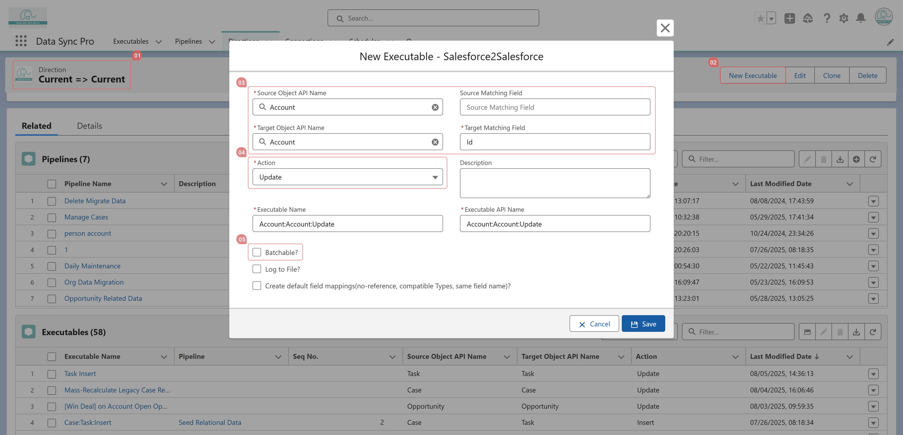

<section>
    <p>
      On a "Current =&gt; Current" Direction record or a Pipeline with 
      a Template Direction set to "Current =&gt; Current", click 
      <strong>New Executable</strong>. Select the same object as both the 
      source and target, use the "Id" field for matching, and choose either 
      "Update" or "Upsert" as the action. Disable "Batchable", then 
      create the Executable.
    </p>
    <p>
      Once created, navigate to the <strong>Triggers</strong> tab to configure 
      the detailed logic for the Self-Adaptive Trigger.
    </p>
  </section>
  
  